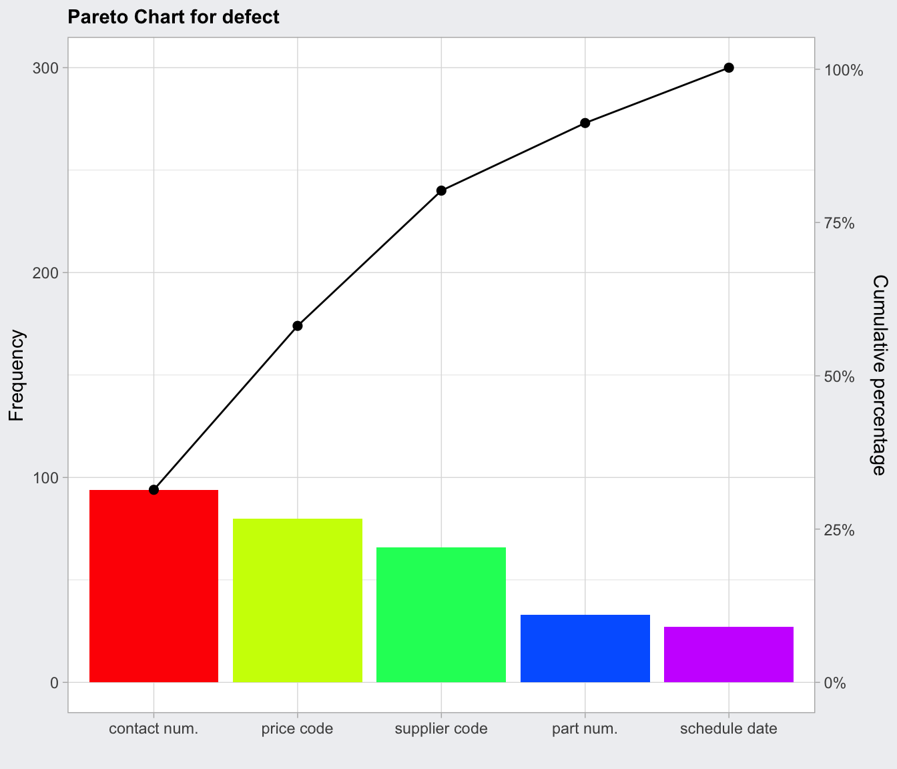

paretoChart.RdComputes a table of statistics and plot a Pareto chart.
paretoChart(data, ...) # S3 method for paretoChart plot(x, title, xlab, ylab = "Frequency", ylab2 = "Cumulative percentage", ylim, col = blues.colors(nlevels), ...)
| data | a vector of values. |
|---|---|
| plot | a logical specifying if the chart should be provided ( |
| x | an object of class |
| title | a character string specifying the main title. Set |
| xlab | a string specifying the label for the x-axis. |
| ylab | a string specifying the label for the y-axis. |
| ylab2 | a string specifying the label for the second y-axis on the right side. |
| ylim | a numeric vector specifying the limits for the y-axis. |
| col | a value for the color, a vector of colors, or a palette for the bars. See the help for |
| ... | catch other optional arguments. |
Returns an object of class 'paretoChart' containing the descriptive statistics used to draw the Pareto chart. This object has associated a print and plot method.
A Pareto chart is a barplot where the categories are ordered in non increasing order, and a line is also added to show the cumulative sum.
Mason, R.L. and Young, J.C. (2002) Multivariate Statistical Process Control with Industrial Applications, SIAM.
Montgomery, D.C. (2013) Introduction to Statistical Quality Control, 7th ed. New York: John Wiley & Sons.
Ryan, T. P. (2011), Statistical Methods for Quality Improvement, 3rd ed. New York: John Wiley & Sons, Inc.
Scrucca, L. (2004). qcc: an R package for quality control charting and statistical process control. R News 4/1, 11-17.
Wetherill, G.B. and Brown, D.W. (1991) Statistical Process Control. New York: Chapman & Hall.
Luca Scrucca
defect <- c(80, 27, 66, 94, 33) names(defect) <- c("price code", "schedule date", "supplier code", "contact num.", "part num.") pc = paretoChart(defect, ylab = "Error frequency") pc#> ── Pareto Chart ────────────────────────────────── #> #> defect Frequency Cum.Freq. Percentage Cum.Percent. #> contact num. 94 94 31.33 31.33 #> price code 80 174 26.67 58.00 #> supplier code 66 240 22.00 80.00 #> part num. 33 273 11.00 91.00 #> schedule date 27 300 9.00 100.00